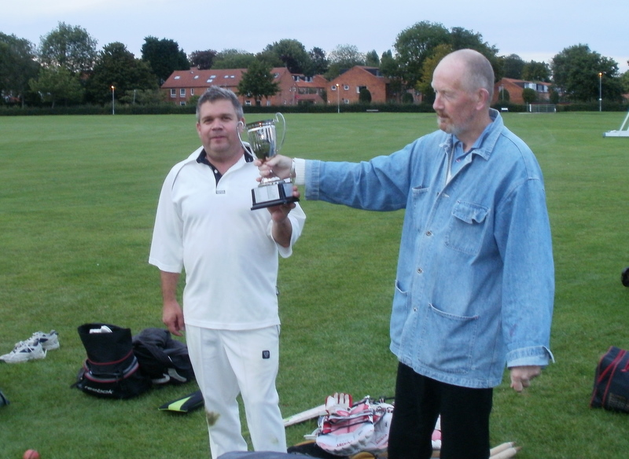

THE TIN POT 20 / 20 LEAGUE
(Evening cricket for univ. staff and post graduates)
THE
2011 SEASON ENDS AS IT BEGAN, WITH VICTORY FOR PLONGE. WATT 44N.O.
TRIUMPHS OVER BRENTNALL 33. PLONGE FINISH IN JOINT 3RD PLACE WITH PDP.
Many Thanks to all the Team Organisers for their hard work and to Trev and the ground staff for all the pitches.
A big thank you to the 2000 visitors to the site during the summer. On to 2012.
DESPITE DEFEAT IN THEIR FINAL MATCH THE CHEMISTS TAKE THE TIN POT TROPHY WITH 14 POINTS.
'and it's not for the sake of a ribboned coat'

James Lee the Chemistry captain gets his hands on the Staff League's Holy Grail.

Chemistry display the silverware despite shock defeat to Alcohology in final game.
 Links
Links
- Association of Cricket Umpires Site.
- Yorkshire County Cricket Club.
- Radio 4 with link to TMS RealAudio feed.
- CricInfo UK Web Site - news, reviews, live match coverage.
- Official Lords cricket ground Site.
- Google cricket directory.
- Yahoo! Rec:Sports:Cricket links directory.
- A wonderful guide to umpiring and signals.
All statistics and scores believed true, but some errors may have occurred.
| |